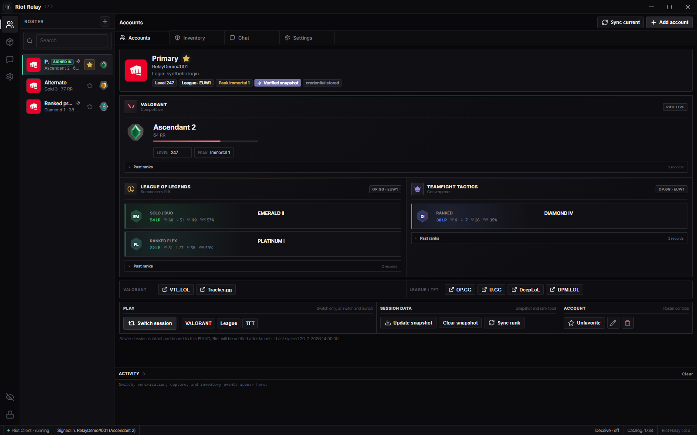
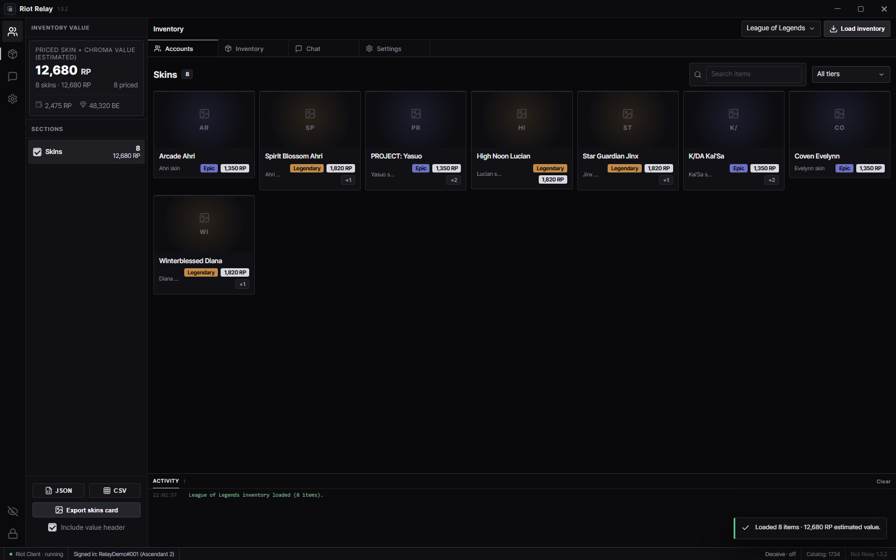
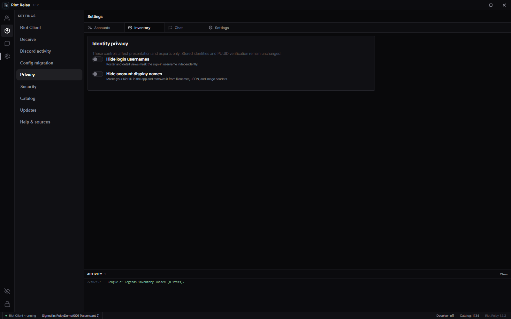
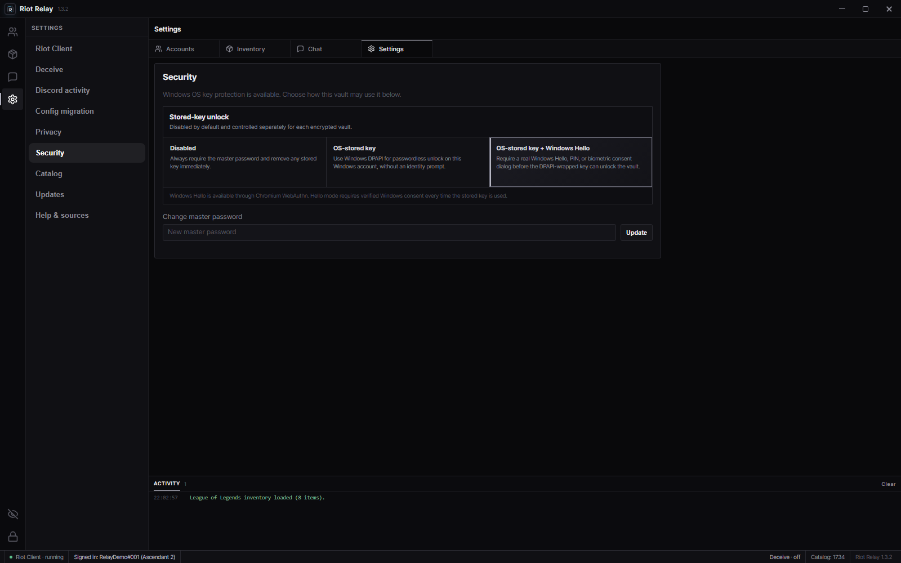

Account relay
Switch sessions or explicitly launch VALORANT, League, or TFT. Two-factor prompts remain in the official Riot Client.
Windows account command center
Riot Relay manages encrypted credentials, identity-bound sessions, unified account data, inventory tools, current-session chat, and privacy-first presence controls in one dense desktop workspace.
Windows x64 · Version 1.3.2 · MIT licensed · Unsigned community build
Core capabilities
Switch sessions or explicitly launch VALORANT, League, or TFT. Two-factor prompts remain in the official Riot Client.
Riot ID and PUUID checks keep sessions, ranks, portraits, inventories, and roster entries attached to the intended account. PUUID is authoritative.
Credentials are encrypted locally with AES-256-GCM and a master-password-derived key. Optional Windows-protected unlock modes are configured per vault.
Inspect supported ranks, inventories and values; export collections; use active-session chat; and control presence from one interface.
Mask login usernames and Riot IDs in the interface and supported exports. Presence controls run through a local proxy.
Release automation tests the project and publishes Windows x64 NSIS and MSI artifacts from version tags.
Interface tour
These repository-owned screenshots are generated from Riot Relay’s current renderer with a capture-only synthetic API fixture. They contain no captured Riot account or user data.

The actual roster and account-detail renderer shows signed-in state, PUUID-bound metadata, three-game ranks, profile links, and deliberate switch or launch actions.

The actual inventory renderer supplies collection totals, wallet balances, section selection, tier filters, Riot artwork handling, and export controls.

Login usernames and account display names are masked independently without changing authoritative identity bindings.

Stored-key unlock is disabled by default, with explicit OS-protected and Windows Hello-gated options per encrypted vault.
Current-renderer captures · synthetic fixture data only · no credentials, Riot identifiers, sessions, messages, inventory, or user files
Installation
Use the button above, expand Assets, and download the x64 package—not “Source code.”
Best for most people and the preferred path for automatic application updates.
Choose MSI for administrator deployment, software management, or when updates are installed manually.
Review the release source and checksums when provided. Set a unique master password; it cannot be recovered.
Updates & privacy
EXE installations are recommended for automatic updates. An update-enabled build may contact GitHub Releases to learn the latest version and download an update; GitHub receives normal connection metadata such as IP address and user agent. MSI installations are intended for managed or manual replacement. Riot Relay does not need account credentials for update checks.
Core account secrets are stored locally, but requested Riot features necessarily communicate with Riot services, and selected data views may use documented third-party catalog or profile services. Read the full privacy disclosure.
Project status
Riot Relay is not endorsed by Riot Games and does not reflect the views or opinions of Riot Games or anyone officially involved in producing or managing Riot Games properties. Riot Games and associated properties are trademarks or registered trademarks of Riot Games, Inc.
The local presence proxy is informed by Deceive by molenzwiebel and contributors. OP.GG protocol research was informed by OPGG.py; no Python runtime or source from it is bundled. The Inter typeface is distributed under the SIL Open Font License 1.1. Complete notices are in THIRD_PARTY_NOTICES.md.
{kind=link}
{kind=link}